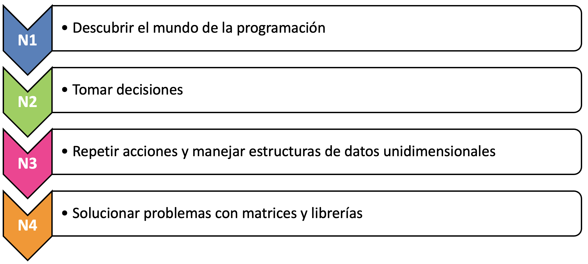

<!DOCTYPE html>
<html lang="en">
  <head>
    <meta charset="utf-8" />
    <meta name="viewport" content="width=device-width, initial-scale=1.0, maximum-scale=1.0, user-scalable=no" />

    <title></title>
    <link rel="stylesheet" href="dist/reveal.css" />
    <link rel="stylesheet" href="dist/theme/iph.css" id="theme" />
    <link rel="stylesheet" href="plugin/highlight/spyder.css" />
	<link rel="stylesheet" href="css/layout.css" />
	<link rel="stylesheet" href="plugin/customcontrols/style.css">


    <script defer src="dist/fontawesome/all.min.js"></script>

	<script type="text/javascript">
		var forgetPop = true;
		function onPopState(event) {
			if(forgetPop){
				forgetPop = false;
			} else {
				parent.postMessage(event.target.location.href, "app://obsidian.md");
			}
        }
		window.onpopstate = onPopState;
		window.onmessage = event => {
			if(event.data == "reload"){
				window.document.location.reload();
			}
			forgetPop = true;
		}

		function fitElements(){
			const itemsToFit = document.getElementsByClassName('fitText');
			for (const item in itemsToFit) {
				if (Object.hasOwnProperty.call(itemsToFit, item)) {
					var element = itemsToFit[item];
					fitElement(element,1, 1000);
					element.classList.remove('fitText');
				}
			}
		}

		function fitElement(element, start, end){

			let size = (end + start) / 2;
			element.style.fontSize = `${size}px`;

			if(Math.abs(start - end) < 1){
				while(element.scrollHeight > element.offsetHeight){
					size--;
					element.style.fontSize = `${size}px`;
				}
				return;
			}

			if(element.scrollHeight > element.offsetHeight){
				fitElement(element, start, size);
			} else {
				fitElement(element, size, end);
			}		
		}


		document.onreadystatechange = () => {
			fitElements();
			if (document.readyState === 'complete') {
				if (window.location.href.indexOf("?export") != -1){
					parent.postMessage(event.target.location.href, "app://obsidian.md");
				}
				if (window.location.href.indexOf("print-pdf") != -1){
					let stateCheck = setInterval(() => {
						clearInterval(stateCheck);
						window.print();
					}, 250);
				}
			}
	};


        </script>
  </head>
  <body>
    <div class="reveal">
      <div class="slides"><section  data-markdown><script type="text/template"><!-- .slide: class="has-light-background drop" data-background-color="#f8f8f8" -->
<div class="" style="position: absolute; left: 0px; top: 0px; height: 700px; width: 960px; min-height: 700px; display: flex; flex-direction: column; align-items: center; justify-content: center" absolute="true">

### <i class="fas fa-award"></i> IP Honores

 ####  *Preguntas Frecuentes*

[Eduardo Rosales](mailto:ee.rosales24@uniandes.edu.co)

Departamento de Ingeniería de Sistemas y Computación

Universidad de los Andes
</div></script></section><section  data-markdown><script type="text/template"><!-- .slide: class="has-light-background drop" data-background-color="#f8f8f8" -->
<div class="" style="position: absolute; left: 0px; top: 0px; height: 700px; width: 960px; min-height: 700px; display: flex; flex-direction: column; align-items: center; justify-content: center" absolute="true">

### Índice (1/8)

- [¿Qué es Introducción a la Programación - IP?](https://eerosales24.github.io/iph_2025_20/general/preguntas_frecuentes/#/9)
- [¿Cuál es el objetivo general del curso?](https://eerosales24.github.io/iph_2025_20/general/preguntas_frecuentes/#/10)
- [¿Qué se aprende en el curso?](https://eerosales24.github.io/iph_2025_20/general/preguntas_frecuentes/#/11)
- [¿En qué se diferencia _IP Honores_  de _IP Regular_ ?](https://eerosales24.github.io/iph_2025_20/general/preguntas_frecuentes/#/13)
- [¿Cuáles son las "reglas" de convivencia IP Honores?](https://eerosales24.github.io/iph_2025_20/general/preguntas_frecuentes/#/14)
- [¿Cuáles son los canales de comunicación del curso?](https://eerosales24.github.io/iph_2025_20/general/preguntas_frecuentes/#/15)
- [¿Cuál es el correo del profesor del curso?](https://eerosales24.github.io/iph_2025_20/general/preguntas_frecuentes/#/16)
- [¿Cuál es el horario de atención del profesor?](https://eerosales24.github.io/iph_2025_20/general/preguntas_frecuentes/#/17)
- [¿Qué puedo hacer si tengo un problema con el profesor?](https://eerosales24.github.io/iph_2025_20/general/preguntas_frecuentes/#/18)

<br>

[<i class="fas fa-home  fa-1x"></i>](https://eerosales24.github.io/iph_2025_20/)
</div></script></section><section  data-markdown><script type="text/template"><!-- .slide: class="has-light-background drop" data-background-color="#f8f8f8" -->
<div class="" style="position: absolute; left: 0px; top: 0px; height: 700px; width: 960px; min-height: 700px; display: flex; flex-direction: column; align-items: center; justify-content: center" absolute="true">

### Índice (2/8)

- [¿En dónde puedo encontrar el material del curso?](https://eerosales24.github.io/iph_2025_20/general/preguntas_frecuentes/#/19)
- [¿En dónde puedo encontrar el programa del curso?](https://eerosales24.github.io/iph_2025_20/general/preguntas_frecuentes/#/20)
- [¿Cuál es la  bibliografía del curso?](https://eerosales24.github.io/iph_2025_20/general/preguntas_frecuentes/#/21)
- [¿Cuales son las herramientas usadas en el curso?](https://eerosales24.github.io/iph_2025_20/general/preguntas_frecuentes/#/22)
- [¿Cuál es la dedicación semanal del curso?](https://eerosales24.github.io/iph_2025_20/general/preguntas_frecuentes/#/23)
- [¿Cuáles son las actividades académicas del curso?](https://eerosales24.github.io/iph_2025_20/general/preguntas_frecuentes/#/24)

<br>

[<i class="fas fa-home  fa-1x"></i>](https://eerosales24.github.io/iph_2025_20/)
</div></script></section><section  data-markdown><script type="text/template"><!-- .slide: class="has-light-background drop" data-background-color="#f8f8f8" -->
<div class="" style="position: absolute; left: 0px; top: 0px; height: 700px; width: 960px; min-height: 700px; display: flex; flex-direction: column; align-items: center; justify-content: center" absolute="true">

### Índice (3/8)

- [¿Cuál es la distribución de notas en el curso?](https://eerosales24.github.io/iph_2025_20/general/preguntas_frecuentes/#/41)
- [¿Cuál es el cronograma del curso?](https://eerosales24.github.io/iph_2025_20/general/preguntas_frecuentes/#/42)
- [¿Cuál es el requisito de asistencia?](https://eerosales24.github.io/iph_2025_20/general/preguntas_frecuentes/#/46)
- [¿Cómo justificar una inasistencia?](https://eerosales24.github.io/iph_2025_20/general/preguntas_frecuentes/#/47)
- [¿Cuál es la regla de aproximación de notas finales?](https://eerosales24.github.io/iph_2025_20/general/preguntas_frecuentes/#/48)
- [¿Cuál es la política de retiros?](https://eerosales24.github.io/iph_2025_20/general/preguntas_frecuentes/#/49)

<br>

[<i class="fas fa-home  fa-1x"></i>](https://eerosales24.github.io/iph_2025_20/)
</div></script></section><section  data-markdown><script type="text/template"><!-- .slide: class="has-light-background drop" data-background-color="#f8f8f8" -->
<div class="" style="position: absolute; left: 0px; top: 0px; height: 700px; width: 960px; min-height: 700px; display: flex; flex-direction: column; align-items: center; justify-content: center" absolute="true">

### Índice (4/8)

- [¿Cómo se entrega un proyecto?](https://eerosales24.github.io/iph_2025_20/general/preguntas_frecuentes/#/50)
- [¿Qué pasa si no entrego a tiempo un proyecto?](https://eerosales24.github.io/iph_2025_20/general/preguntas_frecuentes/#/51)
- [¿Cómo se entrega un examen?](https://eerosales24.github.io/iph_2025_20/general/preguntas_frecuentes/#/52)
- [¿Qué pasa si no entrego un examen?](https://eerosales24.github.io/iph_2025_20/general/preguntas_frecuentes/#/53)
- [¿Qué pasa si no voy a un examen?](https://eerosales24.github.io/iph_2025_20/general/preguntas_frecuentes/#/54)
- [¿Qué pasa si no entrego una tarea?](https://eerosales24.github.io/iph_2025_20/general/preguntas_frecuentes/#/55)
- [¿Qué sucede si (accidentalmente) entrego una respuesta incompleta en un evaluable?](https://eerosales24.github.io/iph_2025_20/general/preguntas_frecuentes/#/56)
- [¿Qué pasa si no entrego un bono?](https://eerosales24.github.io/iph_2025_20/general/preguntas_frecuentes/#/57)


<br>

[<i class="fas fa-home  fa-1x"></i>](https://eerosales24.github.io/iph_2025_20/)
</div></script></section><section  data-markdown><script type="text/template"><!-- .slide: class="has-light-background drop" data-background-color="#f8f8f8" -->
<div class="" style="position: absolute; left: 0px; top: 0px; height: 700px; width: 960px; min-height: 700px; display: flex; flex-direction: column; align-items: center; justify-content: center" absolute="true">

### Índice (5/8)

- [¿Cuáles son las consecuencias de un presunto fraude en un evaluable?](https://eerosales24.github.io/iph_2025_20/general/preguntas_frecuentes/#/58)
- [¿Cuáles son las consecuencias de un presunto fraude en un examen?](https://eerosales24.github.io/iph_2025_20/general/preguntas_frecuentes/#/59)
- [¿Cuáles son las consecuencias de un presunto plagio en la Tarea de ética de N4?](https://eerosales24.github.io/iph_2025_20/general/preguntas_frecuentes/#/60)
- [¿Cuándo el profesor me puede citar a una sustentación?](https://eerosales24.github.io/iph_2025_20/general/preguntas_frecuentes/#/61)


<br>

[<i class="fas fa-home  fa-1x"></i>](https://eerosales24.github.io/iph_2025_20/)
</div></script></section><section  data-markdown><script type="text/template"><!-- .slide: class="has-light-background drop" data-background-color="#f8f8f8" -->
<div class="" style="position: absolute; left: 0px; top: 0px; height: 700px; width: 960px; min-height: 700px; display: flex; flex-direction: column; align-items: center; justify-content: center" absolute="true">

### Índice (6/8)

- [¿Cómo se publican notas?](https://eerosales24.github.io/iph_2025_20/general/preguntas_frecuentes/#/62)
- [¿Cuándo se publican notas?](https://eerosales24.github.io/iph_2025_20/general/preguntas_frecuentes/#/63)
- [¿Cuándo se puede hacer reclamos sobre las notas?](https://eerosales24.github.io/iph_2025_20/general/preguntas_frecuentes/#/64)
- [¿Cuándo se obtiene respuesta a un reclamo?](https://eerosales24.github.io/iph_2025_20/general/preguntas_frecuentes/#/65)
- [¿Cómo hacer reclamos sobre la retroalimentación de un proyecto?](https://eerosales24.github.io/iph_2025_20/general/preguntas_frecuentes/#/66)
- [¿Cómo hacer reclamos sobre la nota de un examen o tarea?](https://eerosales24.github.io/iph_2025_20/general/preguntas_frecuentes/#/67)

<br>

[<i class="fas fa-home  fa-1x"></i>](https://eerosales24.github.io/iph_2025_20/)
</div></script></section><section  data-markdown><script type="text/template"><!-- .slide: class="has-light-background drop" data-background-color="#f8f8f8" -->
<div class="" style="position: absolute; left: 0px; top: 0px; height: 700px; width: 960px; min-height: 700px; display: flex; flex-direction: column; align-items: center; justify-content: center" absolute="true">

###  Índice (7/8)

- [¿Cuáles son las funciones de los monitores?](https://eerosales24.github.io/iph_2025_20/general/preguntas_frecuentes/#/68)
- [¿Cuál es el horario de atención de los monitores?](https://eerosales24.github.io/iph_2025_20/general/preguntas_frecuentes/#/70)
- [¿Cuáles son los correos de los monitores del curso?](https://eerosales24.github.io/iph_2025_20/general/preguntas_frecuentes/#/71)
- [¿Qué puedo hacer si tengo un problema con algún monitor?](https://eerosales24.github.io/iph_2025_20/general/preguntas_frecuentes/#/72)
- [¿Cómo acceder a CupiTaller?](https://eerosales24.github.io/iph_2025_20/general/preguntas_frecuentes/#/73)


<br>

[<i class="fas fa-home  fa-1x"></i>](https://eerosales24.github.io/iph_2025_20/)
</div></script></section><section  data-markdown><script type="text/template"><!-- .slide: class="has-light-background drop" data-background-color="#f8f8f8" -->
<div class="" style="position: absolute; left: 0px; top: 0px; height: 700px; width: 960px; min-height: 700px; display: flex; flex-direction: column; align-items: center; justify-content: center" absolute="true">

### Índice (8/8)

- [¿Qué es la política de ajustes razonables?](https://eerosales24.github.io/iph_2025_20/general/preguntas_frecuentes/#/74)
- [¿Qué es la política de momentos difíciles?](https://eerosales24.github.io/iph_2025_20/general/preguntas_frecuentes/#/75)
- [¿Qué es el protocolo MAAD?](https://eerosales24.github.io/iph_2025_20/general/preguntas_frecuentes/#/76)


<br>

[<i class="fas fa-home  fa-1x"></i>](https://eerosales24.github.io/iph_2025_20/)
</div></script></section><section  data-markdown><script type="text/template"><!-- .slide: class="has-light-background drop" data-background-color="#f8f8f8" -->
<div class="" style="position: absolute; left: 0px; top: 0px; height: 700px; width: 960px; min-height: 700px; display: flex; flex-direction: column; align-items: center; justify-content: center" absolute="true">

### ¿Qué es Introducción a la Programación - IP?

 - 🥇 Curso de _**análisis y resolución de problemas**_, _usando_ **programación**
	 - Obligatorio facultades:
		 - Ingeniería
		 - Ciencias
		 - Economía
	 
	<br>

- El curso en cifras:
	- **44** secciones de IP + **IP Honores**
		- ~1100 estudiantes
		- 35 profesores
		
<br>

 [<i class="fas fa-home  fa-1x"></i>](https://eerosales24.github.io/iph_2025_20/general/preguntas_frecuentes/#/1)
</div></script></section><section  data-markdown><script type="text/template"><!-- .slide: class="has-light-background drop" data-background-color="#f8f8f8" -->
<div class="" style="position: absolute; left: 0px; top: 0px; height: 700px; width: 960px; min-height: 700px; display: flex; flex-direction: column; align-items: center; justify-content: center" absolute="true">

### ¿Cuál es el objetivo general del curso?

<br>

- 🧠 Formar una **manera de pensar lógica y estructurada**

	<br>

- 🏆 Mejorar la **capacidad de análisis y resolución de problemas**
	- Herramienta:
		- 🔑 **Programación**


 <br>

 [<i class="fas fa-home  fa-1x"></i>](https://eerosales24.github.io/iph_2025_20/general/preguntas_frecuentes/#/1)
</div></script></section><section  data-markdown><script type="text/template"><!-- .slide: class="has-light-background drop" data-background-color="#f8f8f8" -->
<div class="" style="position: absolute; left: 0px; top: 0px; height: 700px; width: 960px; min-height: 700px; display: flex; flex-direction: column; align-items: center; justify-content: center" absolute="true">

### ¿Qué se aprende en el curso? (1/2)

El aprendizaje se divide en **4 niveles**:



</div></script></section><section  data-markdown><script type="text/template"><!-- .slide: class="has-light-background drop" data-background-color="#f8f8f8" -->
<div class="" style="position: absolute; left: 0px; top: 0px; height: 700px; width: 960px; min-height: 700px; display: flex; flex-direction: column; align-items: center; justify-content: center" absolute="true">

### ¿Qué se aprende<sup id="fn1">1</sup> en el curso? (2/2)

-  A usar: 
	- Documentación
	- Convenciones y 
	- Buenas prácticas de programación

	<br>
- Crear algoritmos claros y correctos

	<br>
	
- Documentar, implementar, probar y depurar programas
	
<br>

<p id="footnote"> <sup id="fn1">1</sup>No se requiere experiencia previa en programación </p>


<br>

 [<i class="fas fa-home  fa-1x"></i>](https://eerosales24.github.io/iph_2025_20/general/preguntas_frecuentes/#/1)
</div></script></section><section  data-markdown><script type="text/template"><!-- .slide: class="has-light-background drop" data-background-color="#f8f8f8" -->
<div class="" style="position: absolute; left: 0px; top: 0px; height: 700px; width: 960px; min-height: 700px; display: flex; flex-direction: column; align-items: center; justify-content: center" absolute="true">

### ¿En qué se diferencia _IP Honores_  <i class="fas fa-award"></i> de _IP Regular_ ?

- Enfoque más profundo en:
    
    - Fundamentos sólidos de programación
        
        - \+ Cobertura completa de la sintaxis de Python
            
    - Convenciones, buenas prácticas y pruebas de software
        
- **Desafíos exigentes**
    
    - Proyecto _exclusivo_
	    - \+ Complejidad 
    
- **Evaluación \+ rigurosa**
    
    - Algoritmos **claros y correctos**
        
    - Documentación precisa y **pruebas robustas**
        
    - Aplicación **obligatoria** de buenas prácticas 
        
- 🆚 IP regular
    - 🧠 \+ Esfuerzo
        
    - ❌  Acceso a CupiTaller

<br>

 [<i class="fas fa-home  fa-1x"></i>](https://eerosales24.github.io/iph_2025_20/general/preguntas_frecuentes/#/1)
</div></script></section><section  data-markdown><script type="text/template"><!-- .slide: class="has-light-background drop" data-background-color="#f8f8f8" -->
<div class="" style="position: absolute; left: 0px; top: 0px; height: 700px; width: 960px; min-height: 700px; display: flex; flex-direction: column; align-items: center; justify-content: center" absolute="true">

### ¿Cuáles son las "reglas" de convivencia IP Honores?

  - Preguntas en cualquier momento
	  - ✅  Levante la mano
	  
	  
	<br>
	  
- ❌  <i class="fas fa-hamburger"></i>
- ❌  <i class="fas fa-volume-mute"></i>
- <i class="fas fa-mobile-alt"></i>  Modo "no molestar" 

	<br>

- Sesión de clase:
	- Puerta cerrada <i class="fas fa-door-closed"></i>
	
	<br>

<br>

 [<i class="fas fa-home  fa-1x"></i>](https://eerosales24.github.io/iph_2025_20/general/preguntas_frecuentes/#/1)
</div></script></section><section  data-markdown><script type="text/template"><!-- .slide: class="has-light-background drop" data-background-color="#f8f8f8" -->
<div class="" style="position: absolute; left: 0px; top: 0px; height: 700px; width: 960px; min-height: 700px; display: flex; flex-direction: column; align-items: center; justify-content: center" absolute="true">

### ¿Cuáles son los canales de comunicación del curso?

- [Bloque Neón](https://bloqueneon.uniandes.edu.co/d2l/home)<sup id="fn1">1</sup>
  - LMS (Learning Management System) de la Universidad
  
- [Correo Uniandes](https://correo.uniandes.edu.co/)<sup id="fn1">1</sup>
  - Medio de comunicación oficial de la Universidad de los Andes

<br>

<p id="footnote"> <sup id="fn1">1</sup> Ambos sitios deben revisarse con regularidad </p>

<br>

 [<i class="fas fa-home  fa-1x"></i>](https://eerosales24.github.io/iph_2025_20/general/preguntas_frecuentes/#/1)
</div></script></section><section  data-markdown><script type="text/template"><!-- .slide: class="has-light-background drop" data-background-color="#f8f8f8" -->
<div class="" style="position: absolute; left: 0px; top: 0px; height: 700px; width: 960px; min-height: 700px; display: flex; flex-direction: column; align-items: center; justify-content: center" absolute="true">

### ¿Cuál es el correo del profesor del curso?
 
- Eduardo Rosales
	- [ee.rosales24@uniandes.edu.co](mailto:ee.rosales24@uniandes.edu.co)
		- Por favor incluya un **asunto muy claro y conciso**
		- Por favor indique el **motivo específico del correo**


<br>

 [<i class="fas fa-home  fa-1x"></i>](https://eerosales24.github.io/iph_2025_20/general/preguntas_frecuentes/#/1)
</div></script></section><section  data-markdown><script type="text/template"><!-- .slide: class="has-light-background drop" data-background-color="#f8f8f8" -->
<div class="" style="position: absolute; left: 0px; top: 0px; height: 700px; width: 960px; min-height: 700px; display: flex; flex-direction: column; align-items: center; justify-content: center" absolute="true">

### ¿Cuál es el horario de atención del profesor?

- Atención con **cita previa**:
  - [ee.rosales24@uniandes.edu.co](mailto:ee.rosales24@uniandes.edu.co)
	  - Por favor incluya un **asunto muy claro y conciso**
	  - Por favor indique el **motivo específico** de la reunión


<br>

 [<i class="fas fa-home  fa-1x"></i>](https://eerosales24.github.io/iph_2025_20/general/preguntas_frecuentes/#/1)
</div></script></section><section  data-markdown><script type="text/template"><!-- .slide: class="has-light-background drop" data-background-color="#f8f8f8" -->
<div class="" style="position: absolute; left: 0px; top: 0px; height: 700px; width: 960px; min-height: 700px; display: flex; flex-direction: column; align-items: center; justify-content: center" absolute="true">

### ¿Qué puedo hacer si tengo un problema con el profesor?

  - Notificar a los **coordinadores de pregrado ISIS**:
    - [pregisis@uniandes.edu.co](pregisis@uniandes.edu.co)


<br>

 [<i class="fas fa-home  fa-1x"></i>](https://eerosales24.github.io/iph_2025_20/general/preguntas_frecuentes/#/1)
</div></script></section><section  data-markdown><script type="text/template"><!-- .slide: class="has-light-background drop" data-background-color="#f8f8f8" -->
<div class="" style="position: absolute; left: 0px; top: 0px; height: 700px; width: 960px; min-height: 700px; display: flex; flex-direction: column; align-items: center; justify-content: center" absolute="true">

###  ¿En dónde puedo encontrar el material del curso?

1. [**Diapositivas de IP Honores**](https://eerosales24.github.io/iph_2025_20/#)
   - Material **exclusivo** de la sección
	
<br>

2. Material de IP regular en [Bloque Neón](https://bloqueneon.uniandes.edu.co/d2l/home):
    - Presentaciones de cada nivel
    

<br>

 [<i class="fas fa-home  fa-1x"></i>](https://eerosales24.github.io/iph_2025_20/general/preguntas_frecuentes/#/2)
</div></script></section><section  data-markdown><script type="text/template"><!-- .slide: class="has-light-background drop" data-background-color="#f8f8f8" -->
<div class="" style="position: absolute; left: 0px; top: 0px; height: 700px; width: 960px; min-height: 700px; display: flex; flex-direction: column; align-items: center; justify-content: center" absolute="true">

###  ¿En dónde puedo encontrar el programa del curso?


- [Programa del curso](https://eerosales24.github.io/iph_2025_20/general/programa_2025_20_iph.pdf)

- Es un **deber** del estudiante
	- Leer cuidadosamente el programa


<br>

 [<i class="fas fa-home  fa-1x"></i>](https://eerosales24.github.io/iph_2025_20/general/preguntas_frecuentes/#/2)
</div></script></section><section  data-markdown><script type="text/template"><!-- .slide: class="has-light-background drop" data-background-color="#f8f8f8" -->
<div class="" style="position: absolute; left: 0px; top: 0px; height: 700px; width: 960px; min-height: 700px; display: flex; flex-direction: column; align-items: center; justify-content: center" absolute="true">

###  ¿Cuál es la  bibliografía del curso?

- [**Diapositivas de IP Honores**](https://eerosales24.github.io/iph_2025_20/#)

	<br>

- Documentación de Python y librerías:
	- [Python](https://docs.python.org/3/)
	- Para N4:
		- [Pandas](https://pandas.pydata.org/docs/)
		- [matplotlib](https://matplotlib.org/stable/index.html)
	


- Otro recursos:
	- [Notas de clase de IP](https://cupi2-ip.github.io/IPBook)
	- *"How to Think Like a Computer Scientist"* en [Interactive Python](https://runestone.academy/ns/books/published/thinkcspy/index.html)
	- *"Introducción a la programación con Python 3"* en [Repositorio UJI](https://repositori.uji.es/items/992c7ee2-fef4-4061-9958-aefe932fd611)


<br>

 [<i class="fas fa-home  fa-1x"></i>](https://eerosales24.github.io/iph_2025_20/general/preguntas_frecuentes/#/2)
</div></script></section><section  data-markdown><script type="text/template"><!-- .slide: class="has-light-background drop" data-background-color="#f8f8f8" -->
<div class="" style="position: absolute; left: 0px; top: 0px; height: 700px; width: 960px; min-height: 700px; display: flex; flex-direction: column; align-items: center; justify-content: center" absolute="true">

### ¿Cuales son las herramientas usadas en el curso?


- [**Anaconda**](https://www.anaconda.com/download/success):
	- Que instala [Python](https://www.python.org) y 
	- La herramienta de desarrollo del curso:
		- [Spyder](https://www.spyder-ide.org/)
			- Incluyendo ya a  las librerías:
				- [Pandas](https://pandas.pydata.org/docs/)
				- [matplotlib](https://matplotlib.org/stable/index.html)
	

	<br>
	
- [Guía de instalación de Anaconda](https://eerosales24.github.io/iph_2025_20/general/guia_instalacion_anaconda.pdf)
	- ¿Problemas?
		- Repórtelos en el primer laboratorio del curso

	<br>

- Se informará de otras librerías más adelante...


<br>

 [<i class="fas fa-home  fa-1x"></i>](https://eerosales24.github.io/iph_2025_20/general/preguntas_frecuentes/#/2)
</div></script></section><section  data-markdown><script type="text/template"><!-- .slide: class="has-light-background drop" data-background-color="#f8f8f8" -->
<div class="" style="position: absolute; left: 0px; top: 0px; height: 700px; width: 960px; min-height: 700px; display: flex; flex-direction: column; align-items: center; justify-content: center" absolute="true">

### ¿Cuál es la dedicación semanal del curso?

- Dedicación semanal:
	- **2 clases:**
    	- 1h 20m c/u
	<br>
	
	- **1 laboratorio:**
    	- 1h 20m

	<br>

	- **Trabajo fuera del aula:**
    	- **5h** <!-- .element: class="fragment highlight-red" -->


<br>

 [<i class="fas fa-home  fa-1x"></i>](https://eerosales24.github.io/iph_2025_20/general/preguntas_frecuentes/#/2)
</div></script></section><section  data-markdown><script type="text/template"><!-- .slide: class="has-light-background drop" data-background-color="#f8f8f8" -->
<div class="" style="position: absolute; left: 0px; top: 0px; height: 700px; width: 960px; min-height: 700px; display: flex; flex-direction: column; align-items: center; justify-content: center" absolute="true">

### ¿Cuáles son las actividades académicas del curso?

- **Sesiones:**
	- [Clase](https://eerosales24.github.io/iph_2025_20/general/preguntas_frecuentes/#/25)
	- [Laboratorio](https://eerosales24.github.io/iph_2025_20/general/preguntas_frecuentes/#/26)

	<br>

- **No evaluables:**
	- [Proyecto](https://eerosales24.github.io/iph_2025_20/general/preguntas_frecuentes/#/27)

	<br>

- **Evaluables:**
	- [Examen](https://eerosales24.github.io/iph_2025_20/general/preguntas_frecuentes/#/30)
	- [Tarea](https://eerosales24.github.io/iph_2025_20/general/preguntas_frecuentes/#/35)

	<br>

- **Opcionales:**
	- [Bono](https://eerosales24.github.io/iph_2025_20/general/preguntas_frecuentes/#/40)


<br>

 [<i class="fas fa-home  fa-1x"></i>](https://eerosales24.github.io/iph_2025_20/general/preguntas_frecuentes/#/2)
</div></script></section><section  data-markdown><script type="text/template"><!-- .slide: class="has-light-background drop" data-background-color="#f8f8f8" -->
<div class="" style="position: absolute; left: 0px; top: 0px; height: 700px; width: 960px; min-height: 700px; display: flex; flex-direction: column; align-items: center; justify-content: center" absolute="true">

### Clase

- Espacio de enseñanza de los conceptos estudiados en el curso
- Se toma asistencia
- Enfoque teórico y práctico
    - **[Diapositivas exclusivas](https://eerosales24.github.io/iph_2025_20/#)** de IP Honores con:
	    - Teoría, ejemplos
	    - Preguntas tipo quiz (no evaluables)

	<br>
	
- **Fechas:**
	- Semanales
		- **Martes y jueves, 9:30 - 10:50am**
		- Salón: **SD_306**
			- [Edificio Santo Domingo (SD)](https://maps.app.goo.gl/QSBeLm9v3rrkPMU99)

<br>

 [<i class="fas fa-home  fa-1x"></i>](https://eerosales24.github.io/iph_2025_20/general/preguntas_frecuentes/#/2)
</div></script></section><section  data-markdown><script type="text/template"><!-- .slide: class="has-light-background drop" data-background-color="#f8f8f8" -->
<div class="" style="position: absolute; left: 0px; top: 0px; height: 700px; width: 960px; min-height: 700px; display: flex; flex-direction: column; align-items: center; justify-content: center" absolute="true">

### Laboratorio

- Espacio para practicar los conceptos estudiados en el curso
	- Se toma asistencia
	- Trabajo individual
	- Supervisado por el profesor y los 2 monitores
		- Enfoque práctico
			-  **[Enunciados exclusivos](https://eerosales24.github.io/iph_2025_20/#)** de IP Honores
	<br>

- **Fechas:**
	- Semanales
		- **Viernes, 9:30 - 10:50am**
		- Laboratorio: **ML-109B**
			-  [Edificio Mario Laserna (ML)](https://maps.app.goo.gl/xjp19csuLJXDGmwA9)


<br>

 [<i class="fas fa-home  fa-1x"></i>](https://eerosales24.github.io/iph_2025_20/general/preguntas_frecuentes/#/2)
</div></script></section><section  data-markdown><script type="text/template"><!-- .slide: class="has-light-background drop" data-background-color="#f8f8f8" -->
<div class="" style="position: absolute; left: 0px; top: 0px; height: 700px; width: 960px; min-height: 700px; display: flex; flex-direction: column; align-items: center; justify-content: center" absolute="true">

### Proyecto (1/3)

- Actividad práctica **no evaluable** de temática específica
- Trabajo individual opcional

	<br>

- **Fechas**:
	- Publicación:
		- Cronograma de la sección (N#-PROY)
	- Entrega:
		- **N1 - N3:**
			- Hasta fecha del examen de nivel
				- [Cronograma del curso](https://eerosales24.github.io/iph_2025_20/general/cronograma_actividades_2025_20_iph.pdf) (N#-EXAM)
		- **N4:**
			- Hasta fecha del examen final
				- Fecha comunicada → Final del semestre
</div></script></section><section  data-markdown><script type="text/template"><!-- .slide: class="has-light-background drop" data-background-color="#f8f8f8" -->
<div class="" style="position: absolute; left: 0px; top: 0px; height: 700px; width: 960px; min-height: 700px; display: flex; flex-direction: column; align-items: center; justify-content: center" absolute="true">

### Proyecto (2/3)

- **Enunciados N1 – N3**:
	- Creación → Profesor
		- Implementación de funciones en Python
	- Temática:
		- Algoritmia relacionada a temas del nivel

	<br>

- **Enunciado N4**:
	- Creación → Coordinación
		- El mismo del curso de IP regular
	- Tema principal:
		- Algoritmia de matrices
</div></script></section><section  data-markdown><script type="text/template"><!-- .slide: class="has-light-background drop" data-background-color="#f8f8f8" -->
<div class="" style="position: absolute; left: 0px; top: 0px; height: 700px; width: 960px; min-height: 700px; display: flex; flex-direction: column; align-items: center; justify-content: center" absolute="true">

### Proyecto (3/3)

- **Calificación:**
	- Sin nota
		- **Preparación → Examen de nivel** <!-- .element: class="fragment highlight-blue" -->
		
	- **N1 - N3:**
		- Monitores revisan y dan:
			- **Retroalimentación formativa**
				- Si proyecto entregado a tiempo
				- Retroalimentación → Ayuda al estudiante
					- Cuantificar avance y comprensión


	<br>
	
- Información adicional más adelante en el curso...


<br>

 [<i class="fas fa-home  fa-1x"></i>](https://eerosales24.github.io/iph_2025_20/general/preguntas_frecuentes/#/2)
</div></script></section><section  data-markdown><script type="text/template"><!-- .slide: class="has-light-background drop" data-background-color="#f8f8f8" -->
<div class="" style="position: absolute; left: 0px; top: 0px; height: 700px; width: 960px; min-height: 700px; display: flex; flex-direction: column; align-items: center; justify-content: center" absolute="true">

### Examen (1/5)

- Actividad **evaluable** sobre los conceptos enseñados en el curso
	- Escrito
	- Uno por nivel
	- **Basado en el proyecto de nivel** <!-- .element: class="fragment highlight-blue" -->
	- Trabajo Individual

	<br>
	
- ✅ **En papel**
	- Para resolverse a mano
	- Se _firma_ hoja inicial 
		- Con instrucciones y reglas
	- ❌  Computadores, smartphones, smartwatches, etc.
	- ❌ Apuntes, notas, libros, etc.

	<br>
</div></script></section><section  data-markdown><script type="text/template"><!-- .slide: class="has-light-background drop" data-background-color="#f8f8f8" -->
<div class="" style="position: absolute; left: 0px; top: 0px; height: 700px; width: 960px; min-height: 700px; display: flex; flex-direction: column; align-items: center; justify-content: center" absolute="true">

### Examen (2/5)

- **Fechas:**
	- **N1 a N3:**
		- [Cronograma del curso](https://eerosales24.github.io/iph_2025_20/general/cronograma_actividades_2025_20_iph.pdf) (N#-EXAM)
	
	<br>
	
	- **N4**:
		- En semana de exámenes finales
			- Fecha programada → Dirección de Registro:
				- ❌  Adelantar/modificar fecha
</div></script></section><section  data-markdown><script type="text/template"><!-- .slide: class="has-light-background drop" data-background-color="#f8f8f8" -->
<div class="" style="position: absolute; left: 0px; top: 0px; height: 700px; width: 960px; min-height: 700px; display: flex; flex-direction: column; align-items: center; justify-content: center" absolute="true">

### Examen (3/5)

- **Enunciados N1 – N3**:
	- Creación → Profesor:
		- Incluyen al menos **2 puntos prácticos**
			- Implementación de funciones en Python
				- Funciones basadas en el proyecto
			- **Puntos prácticos → mayor peso**
			
		<br>
	
	- Temas evaluados:
		1.  Funcionalidades y **extensiones** del proyecto
		2.  No relacionados al proyecto
			- Ej. **Algoritmia** sobre temas del nivel
</div></script></section><section  data-markdown><script type="text/template"><!-- .slide: class="has-light-background drop" data-background-color="#f8f8f8" -->
<div class="" style="position: absolute; left: 0px; top: 0px; height: 700px; width: 960px; min-height: 700px; display: flex; flex-direction: column; align-items: center; justify-content: center" absolute="true">

### Examen (4/5)

- **Enunciado del examen final (N4)**:
	- Creación → Coordinación de IP
		- El mismo examen de IP regular
	 - Se crean varios enunciados
		- **Puntos prácticos → mayor peso**
			- Tema principal:
				- Algoritmia de matrices
</div></script></section><section  data-markdown><script type="text/template"><!-- .slide: class="has-light-background drop" data-background-color="#f8f8f8" -->
<div class="" style="position: absolute; left: 0px; top: 0px; height: 700px; width: 960px; min-height: 700px; display: flex; flex-direction: column; align-items: center; justify-content: center" absolute="true">

### Examen (5/5)

- **Calificación:**
	- Profesor
		- Basado en rúbricas **objetivas e imparciales**:
			- Algoritmos claros y correctos
			- Buenas prácticas obligatorias
			- Pruebas rigurosas

<br>

- Información adicional más adelante en el curso...


<br>

 [<i class="fas fa-home  fa-1x"></i>](https://eerosales24.github.io/iph_2025_20/general/preguntas_frecuentes/#/2)
</div></script></section><section  data-markdown><script type="text/template"><!-- .slide: class="has-light-background drop" data-background-color="#f8f8f8" -->
<div class="" style="position: absolute; left: 0px; top: 0px; height: 700px; width: 960px; min-height: 700px; display: flex; flex-direction: column; align-items: center; justify-content: center" absolute="true">

### Tarea

- Actividad práctica **evaluable** de temática abierta

- Tipos:
	-  [Tarea de senecode](https://eerosales24.github.io/iph_2025_20/general/preguntas_frecuentes/#/36)
	- [Tarea de N2](https://eerosales24.github.io/iph_2025_20/general/preguntas_frecuentes/#/38)
	- [Tarea de ética de N4](https://eerosales24.github.io/iph_2025_20/general/preguntas_frecuentes/#/39)


<br>

 [<i class="fas fa-home  fa-1x"></i>](https://eerosales24.github.io/iph_2025_20/general/preguntas_frecuentes/#/2)
</div></script></section><section  data-markdown><script type="text/template"><!-- .slide: class="has-light-background drop" data-background-color="#f8f8f8" -->
<div class="" style="position: absolute; left: 0px; top: 0px; height: 700px; width: 960px; min-height: 700px; display: flex; flex-direction: column; align-items: center; justify-content: center" absolute="true">

###  Tarea de senecode (1/2)

- Actividad **evaluable** que permite la práctica de los conceptos del curso
- Trabajo individual
	<br>
		
- **Medio:**
	- [senecode](https://senecode.virtual.uniandes.edu.co/)  <sup id="fn1">1</sup>
		- Catálogo de **+200** ejercicios de programación en Python
			- Divididos por niveles, temas y dificultades
		- Ofrece retroalimentación casi inmediata
			- Soporta múltiples intentos
				- Sin penalidad por reintentos


<p id="footnote"> <sup id="fn1">1</sup> Disponible desde semana 2 o 3</p>
</div></script></section><section  data-markdown><script type="text/template"><!-- .slide: class="has-light-background drop" data-background-color="#f8f8f8" -->
<div class="" style="position: absolute; left: 0px; top: 0px; height: 700px; width: 960px; min-height: 700px; display: flex; flex-direction: column; align-items: center; justify-content: center" absolute="true">

###  Tarea de senecode (2/2)

- **Fechas de publicación:**
	- Definidas por el profesor
		- Hasta semanalmente

	<br>
	
- **Calificación:**
	- senecode  hace calificación automática
		- El profesor exporta y reporta notas
			
<br>


<!-- .element: style="width: 8%; height: 15%" -->

- Información adicional más adelante en el curso...

<br>

 [<i class="fas fa-home  fa-1x"></i>](https://eerosales24.github.io/iph_2025_20/general/preguntas_frecuentes/#/2)
</div></script></section><section  data-markdown><script type="text/template"><!-- .slide: class="has-light-background drop" data-background-color="#f8f8f8" -->
<div class="" style="position: absolute; left: 0px; top: 0px; height: 700px; width: 960px; min-height: 700px; display: flex; flex-direction: column; align-items: center; justify-content: center" absolute="true">

###  Tarea de N2

- Actividad **evaluable** sobre manejo de [Spyder](https://www.spyder-ide.org/)
- Común a todas las secciones
- Trabajo individual

	<br>

- **Fecha de publicación:**
	- Durante un laboratorio de N2

	<br>
- **Medio:**
	- Bloque Neón
		- Entrega en Word o PDF
		
	<br>

- **Calificación:**
	- Monitores


<br>


- Información adicional más adelante en el curso...

<br>

 [<i class="fas fa-home  fa-1x"></i>](https://eerosales24.github.io/iph_2025_20/general/preguntas_frecuentes/#/2)
</div></script></section><section  data-markdown><script type="text/template"><!-- .slide: class="has-light-background drop" data-background-color="#f8f8f8" -->
<div class="" style="position: absolute; left: 0px; top: 0px; height: 700px; width: 960px; min-height: 700px; display: flex; flex-direction: column; align-items: center; justify-content: center" absolute="true">

### Tarea de ética de N4 (1/2)

- Actividad **evaluable** sobre aspectos éticos del curso
	- Común a todas las secciones
	- Trabajo individual

	<br>

- **Fecha de publicación:**
	- Desde 1ra semana de N4

	<br>
	
- **Medio:**
	- Bloque Neón
		- Entrega en Word o PDF

	<br>

- **Calificación:**
	- Monitores
	


<br>

- Información adicional más adelante en el curso...


<br>

 [<i class="fas fa-home  fa-1x"></i>](https://eerosales24.github.io/iph_2025_20/general/preguntas_frecuentes/#/2)
</div></script></section><section  data-markdown><script type="text/template"><!-- .slide: class="has-light-background drop" data-background-color="#f8f8f8" -->
<div class="" style="position: absolute; left: 0px; top: 0px; height: 700px; width: 960px; min-height: 700px; display: flex; flex-direction: column; align-items: center; justify-content: center" absolute="true">

### Bono

- Actividad  **opcional** para afianzar el aprendizaje de temas clave del curso

	<br>

- **Reglas:**
	- 1 máx. por nivel y de mérito académico
	- Opcionales, no acumulables ni transferibles
	- Hasta **+0.25** 
		- Aplicable solo a nota de parcial
			- Nota + bono <= 5.0
	 - Propuestos por el profesor
		- ✅ Para **todos** los estudiantes de la sección
		-  ❌ Bonos o trabajos extra para un solo estudiante
<br>

- **Fechas:**
	- Si alguno, publicación definida por el profesor

		<br>

- **Calificación:**
	- Profesor


 [<i class="fas fa-home  fa-1x"></i>](https://eerosales24.github.io/iph_2025_20/general/preguntas_frecuentes/#/2)
</div></script></section><section  data-markdown><script type="text/template"><!-- .slide: class="has-light-background drop" data-background-color="#f8f8f8" -->
<div class="" style="position: absolute; left: 0px; top: 0px; height: 700px; width: 960px; min-height: 700px; display: flex; flex-direction: column; align-items: center; justify-content: center" absolute="true">

### ¿Cuál es la distribución de notas en el curso?


<!DOCTYPE html>
<html lang="es">
<head>
  <meta charset="UTF-8">
  <style>
    table {
      border-collapse: collapse;
      text-align: center;
      font-family: Arial, sans-serif;
      width: 50%;
      margin: 20px auto;
    }

    th, td {
      border: 1px solid #000;
      padding: 10px;
      font-weight: bold;
    }

    th {
      background-color: white;
    }

    .nivel1 {
      background-color: #b6d5f7;
    }

    .nivel2 {
      background-color: #d6f5ce;
    }

    .nivel3 {
      background-color: #e9a8bd;
    }

    .nivel4 {
      background-color: #fcd59c;
    }
  </style>
</head>
<body>

<table>
  <tr>
    <th>Nivel</th>
    <th>Examen</th>
    <th>Tareas</th>
    <th>Total</th>
  </tr>
  <tr class="nivel1">
    <td>N1</td>
    <td>9%</td>
    <td>1%</td>
    <td>10%</td>
  </tr>
  <tr class="nivel2">
    <td>N2</td>
    <td>14%</td>
    <td>6%</td>
    <td>20%</td>
  </tr>
  <tr class="nivel3">
    <td>N3</td>
    <td>31%</td>
    <td>4%</td>
    <td>35%</td>
  </tr>
  <tr class="nivel4">
    <td>N4</td>
    <td>32%</td>
    <td>3%</td>
    <td>35%</td>
  </tr>
</table>

</body>
</html>


 [<i class="fas fa-home  fa-1x"></i>](https://eerosales24.github.io/iph_2025_20/general/preguntas_frecuentes/#/3)
</div></script></section><section  data-markdown><script type="text/template"><!-- .slide: class="has-light-background drop" data-background-color="#f8f8f8" -->
<div class="" style="position: absolute; left: 0px; top: 0px; height: 700px; width: 960px; min-height: 700px; display: flex; flex-direction: column; align-items: center; justify-content: center" absolute="true">

### ¿Cuál es el [cronograma del curso](https://eerosales24.github.io/iph_2025_20/general/cronograma_actividades_2025_20_iph.pdf)? (1/4)


</div></script></section><section  data-markdown><script type="text/template"><!-- .slide: class="has-light-background drop" data-background-color="#f8f8f8" -->
<div class="" style="position: absolute; left: 0px; top: 0px; height: 700px; width: 960px; min-height: 700px; display: flex; flex-direction: column; align-items: center; justify-content: center" absolute="true">

### ¿Cuál es el [cronograma del curso](https://eerosales24.github.io/iph_2025_20/general/cronograma_actividades_2025_20_iph.pdf)?  (2/4)

- Cada nivel tiene un color asignado
- Contiene fechas de:
	- Clases
	- Laboratorios
	- Festivos y fechas especiales
	- Publicación de proyectos
	- Exámenes:
		- N1, N2 y N3
</div></script></section><section  data-markdown><script type="text/template"><!-- .slide: class="has-light-background drop" data-background-color="#f8f8f8" -->
<div class="" style="position: absolute; left: 0px; top: 0px; height: 700px; width: 960px; min-height: 700px; display: flex; flex-direction: column; align-items: center; justify-content: center" absolute="true">

### ¿Cuál es el [cronograma del curso](https://eerosales24.github.io/iph_2025_20/general/cronograma_actividades_2025_20_iph.pdf)?  (3/4)

- Ejemplo de convenciones para Nivel 1:
	- **N1-C1**:
		- Clase 1 de Nivel 1
	- **N1-L1**:
		- Laboratorio 1 de Nivel 1
	- **N1-PUBLI**:
		- Publicación del proyecto de Nivel 1
</div></script></section><section  data-markdown><script type="text/template"><!-- .slide: class="has-light-background drop" data-background-color="#f8f8f8" -->
<div class="" style="position: absolute; left: 0px; top: 0px; height: 700px; width: 960px; min-height: 700px; display: flex; flex-direction: column; align-items: center; justify-content: center" absolute="true">

### ¿Cuál es el [cronograma del curso](https://eerosales24.github.io/iph_2025_20/general/cronograma_actividades_2025_20_iph.pdf)?  (4/4)

- Ejemplo de convenciones para Nivel 1:
	- **N1-EXAM**:
		- Examen de Nivel 1
	
	- **En gris**:
		- Festivos y fechas especiales

<br>

[<i class="fas fa-home  fa-1x"></i>](https://eerosales24.github.io/iph_2025_20/general/preguntas_frecuentes/#/3)
</div></script></section><section  data-markdown><script type="text/template"><!-- .slide: class="has-light-background drop" data-background-color="#f8f8f8" -->
<div class="" style="position: absolute; left: 0px; top: 0px; height: 700px; width: 960px; min-height: 700px; display: flex; flex-direction: column; align-items: center; justify-content: center" absolute="true">

### ¿Cuál es el requisito de asistencia?

- Requisito para aprobación del curso
  - Asistencia >= **80%**<!-- .element: class="fragment highlight-red" --><sup id="fn1">1</sup> 
    - Considerando todas las sesiones (clases y laboratorios)
- Profesor lleva **bitácora de asistencia**

	<br>

- Caso de pérdida por inasistencia
	- La nota final será del curso será
		- El **menor valor entre 2.5 y la nota real** <!-- .element: class="fragment highlight-red" -->

<br>
<p id="footnote"> <sup id="fn1">1</sup> ART. 43 - <a href="https://secretariageneral.uniandes.edu.co/images/documents/reglamento-pregrado-web-2025.pdf">Reglamento General de Estudiantes de Pregrado</a></p>

<br>

[<i class="fas fa-home  fa-1x"></i>](https://eerosales24.github.io/iph_2025_20/general/preguntas_frecuentes/#/3)
</div></script></section><section  data-markdown><script type="text/template"><!-- .slide: class="has-light-background drop" data-background-color="#f8f8f8" -->
<div class="" style="position: absolute; left: 0px; top: 0px; height: 700px; width: 960px; min-height: 700px; display: flex; flex-direction: column; align-items: center; justify-content: center" absolute="true">

### ¿Cómo justificar una inasistencia?

- Se debe presentar una **excusa válida**<sup id="fn1">1</sup> en un plazo de **3 días hábiles**<sup id="fn1">2</sup>

	<br> 
	
- La excusa es verificada → **Servicio Médico** de la universidad
	- **NO se aceptan incapacidades de médicos particulares**<!-- .element: class="fragment highlight-red" -->
- ❌ Excusas falsificadas =  [proceso disciplinario](https://decanaturadeestudiantes.uniandes.edu.co/apoyo/preguntas-frecuentes)

<br>

<p id="footnote"> <sup id="fn1">1</sup> Definición de <a href="https://decanaturadeestudiantes.uniandes.edu.co/incapacidades-medicas">incapacidad médica válida</a></p>
<p id="footnote"> <sup id="fn1">2</sup> ART. 45 - <a href="https://secretariageneral.uniandes.edu.co/images/documents/reglamento-pregrado-web-2025.pdf">Reglamento General de Estudiantes de Pregrado</a></p>

<br>

[<i class="fas fa-home  fa-1x"></i>](https://eerosales24.github.io/iph_2025_20/general/preguntas_frecuentes/#/3)
</div></script></section><section  data-markdown><script type="text/template"><!-- .slide: class="has-light-background drop" data-background-color="#f8f8f8" -->
<div class="" style="position: absolute; left: 0px; top: 0px; height: 700px; width: 960px; min-height: 700px; display: flex; flex-direction: column; align-items: center; justify-content: center" absolute="true">

### ¿Cuál es la regla de aproximación de notas finales?

- Las notas finales del curso se aproximan<sup id="fn1">1</sup> así:

<table border="1" style="border-collapse: collapse; width: 100%; text-align: center; font-size: 20px;">
  <thead style="background-color: #d0e6f8;">
    <tr>
      <th style="color: black;" align="center">Rango de nota</th>
      <th style="color: black;" align="center">Nota ya aproximada</th>
    </tr>
  </thead>
  <tbody>
    <tr>
      <td>De 0.0 a 1.74</td>
      <td>1.5</td>
    </tr>
    <tr style="background-color: #d3d3d3;">
      <td style="color: black;">De 1.75 a 2.24</td>
      <td style="color: black;">2.0</td>
    </tr>
    <tr>
      <td>De 2.25 a 2.99</td>
      <td>2.5</td>
    </tr>
    <tr style="background-color: #d3d3d3;font-weight: bold">
      <td style="color: black;">De 3.0 a 3.24</td>
      <td style="color: black;">3.0</td>
    </tr>
    <tr>
      <td>De 3.25 a 3.74</td>
      <td>3.5</td>
    </tr>
    <tr style="background-color: #d3d3d3;">
      <td style="color: black;">De 3.75 a 4.24</td>
      <td style="color: black;">4.0</td>
    </tr>
    <tr>
      <td>De 4.25 a 4.74</td>
      <td>4.5</td>
    </tr>
    <tr style="background-color: #d3d3d3; font-weight: bold;">
      <td style="color: black;">De 4.75 a 5.0</td>
      <td style="color: black;">5.0</td>
    </tr>
  </tbody>
</table>

<p id="footnote"> <sup id="fn1">1</sup>El curso se aprueba con una nota igual o superior a <b>3.0</b>. No hay excepciones a esta regla</p>


[<i class="fas fa-home  fa-1x"></i>](https://eerosales24.github.io/iph_2025_20/general/preguntas_frecuentes/#/3)
</div></script></section><section  data-markdown><script type="text/template"><!-- .slide: class="has-light-background drop" data-background-color="#f8f8f8" -->
<div class="" style="position: absolute; left: 0px; top: 0px; height: 700px; width: 960px; min-height: 700px; display: flex; flex-direction: column; align-items: center; justify-content: center" absolute="true">

### ¿Cuál es la política de retiros?

  - El **Consejo Académico** de la universidad dictaminó:
	  - Hasta semana 11 (cursos de 16 semanas)
		  - 2 semanas después de entrega de notas parciales

		
		<br>

  - A **octubre 10**
	  - Se habrá entregado mínimo el **30%**
		  - De la nota del curso
		  
	<br>
	
- Estudiante es **único responsable** <!-- .element: class="fragment highlight-red" --> → Decisión de retirar
	- Último día de retiros
	    - **Octubre 24, 6:00pm** <!-- .element: class="fragment highlight-red" -->  

<br>

[<i class="fas fa-home  fa-1x"></i>](https://eerosales24.github.io/iph_2025_20/general/preguntas_frecuentes/#/3)
</div></script></section><section  data-markdown><script type="text/template"><!-- .slide: class="has-light-background drop" data-background-color="#f8f8f8" -->
<div class="" style="position: absolute; left: 0px; top: 0px; height: 700px; width: 960px; min-height: 700px; display: flex; flex-direction: column; align-items: center; justify-content: center" absolute="true">

###  ¿Cómo se entrega un proyecto?

  - Entrega **opcional**
	  - A través de Bloque Neón
	    - Instrucciones en el enunciado del proyecto
			- Se practicará el proceso con antelación


<br>

[<i class="fas fa-home  fa-1x"></i>](https://eerosales24.github.io/iph_2025_20/general/preguntas_frecuentes/#/4)
</div></script></section><section  data-markdown><script type="text/template"><!-- .slide: class="has-light-background drop" data-background-color="#f8f8f8" -->
<div class="" style="position: absolute; left: 0px; top: 0px; height: 700px; width: 960px; min-height: 700px; display: flex; flex-direction: column; align-items: center; justify-content: center" absolute="true">

###  ¿Qué pasa si no entrego a tiempo un proyecto?

  - Los proyectos son **opcionales**
	  - Se pueden entregar 
		  - Hasta el día del examen de nivel
			  - Hasta media hora antes del mismo
- **No hay notas asociadas a los proyectos**
	<br>

- Si no se entrega el proyecto:
	- Solo no recibirá retroalimentación formativa del mismo

<br>

[<i class="fas fa-home  fa-1x"></i>](https://eerosales24.github.io/iph_2025_20/general/preguntas_frecuentes/#/4)
</div></script></section><section  data-markdown><script type="text/template"><!-- .slide: class="has-light-background drop" data-background-color="#f8f8f8" -->
<div class="" style="position: absolute; left: 0px; top: 0px; height: 700px; width: 960px; min-height: 700px; display: flex; flex-direction: column; align-items: center; justify-content: center" absolute="true">

###  ¿Cómo se entrega un examen?

  - Todos los exámenes son **presenciales**
	  - Solo puede presentarlo quien esté presente y
		  - **Firme** la hoja inicial con instrucciones y reglas

<br>

- Información adicional más adelante en el curso...

<br>

[<i class="fas fa-home  fa-1x"></i>](https://eerosales24.github.io/iph_2025_20/general/preguntas_frecuentes/#/4)
</div></script></section><section  data-markdown><script type="text/template"><!-- .slide: class="has-light-background drop" data-background-color="#f8f8f8" -->
<div class="" style="position: absolute; left: 0px; top: 0px; height: 700px; width: 960px; min-height: 700px; display: flex; flex-direction: column; align-items: center; justify-content: center" absolute="true">

### ¿Qué pasa si no entrego un examen?

  - La entrega solo puede hacerse de forma presencial
    - **No hay excepciones a esta regla** 

		<br> 
	
  - La nota será **cero (0.0)**<!-- .element: class="fragment highlight-red" -->  si el examen:
	  - No se entrega
	  - Se entrega sin nombre (o sin una forma unívoca de identificar al autor)
	  - Por un medio no autorizado
	  - Por fuera del plazo

<br>

[<i class="fas fa-home  fa-1x"></i>](https://eerosales24.github.io/iph_2025_20/general/preguntas_frecuentes/#/4)
</div></script></section><section  data-markdown><script type="text/template"><!-- .slide: class="has-light-background drop" data-background-color="#f8f8f8" -->
<div class="" style="position: absolute; left: 0px; top: 0px; height: 700px; width: 960px; min-height: 700px; display: flex; flex-direction: column; align-items: center; justify-content: center" absolute="true">

### ¿Qué pasa si no voy al examen?

  - **Ausencia justificada**
    - Presentar la justificación por escrito
	    - Al profesor en **máximo 3 días calendario**
	- Se programará un supletorio

	<br>
  
  - **Ausencia no justificada**
    - La calificación del examen será **cero (0.0)** <!-- .element: class="fragment highlight-red" -->

<br>

[<i class="fas fa-home  fa-1x"></i>](https://eerosales24.github.io/iph_2025_20/general/preguntas_frecuentes/#/4)
</div></script></section><section  data-markdown><script type="text/template"><!-- .slide: class="has-light-background drop" data-background-color="#f8f8f8" -->
<div class="" style="position: absolute; left: 0px; top: 0px; height: 700px; width: 960px; min-height: 700px; display: flex; flex-direction: column; align-items: center; justify-content: center" absolute="true">

### ¿Qué pasa si no entrego una tarea?
	
  - La nota será **cero (0.0)** <!-- .element: class="fragment highlight-red" --> si la tarea:
	  - No se entrega
	  - Se entrega sin nombre (o sin una forma unívoca de identificar al autor)
	  - Por un medio no autorizado
	  - Por fuera del plazo

<br>

[<i class="fas fa-home  fa-1x"></i>](https://eerosales24.github.io/iph_2025_20/general/preguntas_frecuentes/#/4)
</div></script></section><section  data-markdown><script type="text/template"><!-- .slide: class="has-light-background drop" data-background-color="#f8f8f8" -->
<div class="" style="position: absolute; left: 0px; top: 0px; height: 700px; width: 960px; min-height: 700px; display: flex; flex-direction: column; align-items: center; justify-content: center" absolute="true">

### ¿Qué sucede si (accidentalmente) entrego una respuesta incompleta en un evaluable?

  - Se califica **únicamente** <!-- .element: class="fragment highlight-red" --> el contenido que haya sido enviado
	  - Mediante el medio autorizado (Ej: Bloque Neón, senecode, entrega impresa)
		  - En el formato solicitado y
			  - Hasta la fecha y hora límite
			  
	 - No hay excepciones a esta regla:
	      - **No se admiten entregas posteriores**
		      - **Ni usando un medio o formato distinto al autorizado**
				

<br>

[<i class="fas fa-home  fa-1x"></i>](https://eerosales24.github.io/iph_2025_20/general/preguntas_frecuentes/#/4)
</div></script></section><section  data-markdown><script type="text/template"><!-- .slide: class="has-light-background drop" data-background-color="#f8f8f8" -->
<div class="" style="position: absolute; left: 0px; top: 0px; height: 700px; width: 960px; min-height: 700px; display: flex; flex-direction: column; align-items: center; justify-content: center" absolute="true">

### ¿Qué pasa si no entrego un bono?

<br>

- Los bonos son de entrega complemente  **opcional**
	- No hay reclamos sobre su nota


<br>

[<i class="fas fa-home  fa-1x"></i>](https://eerosales24.github.io/iph_2025_20/general/preguntas_frecuentes/#/4)
</div></script></section><section  data-markdown><script type="text/template"><!-- .slide: class="has-light-background drop" data-background-color="#f8f8f8" -->
<div class="" style="position: absolute; left: 0px; top: 0px; height: 700px; width: 960px; min-height: 700px; display: flex; flex-direction: column; align-items: center; justify-content: center" absolute="true">

### ¿Cuáles son las consecuencias de un presunto fraude en un evaluable?

- **Obligaciones del estudiante:**
	- Entregar soluciones de su **completa autoría** 
	- Usar solo **contenido autorizado:**
		 - Temas y sintaxis vistos
			- Hasta el nivel correspondiente

	- **Prohibido:**
	
		❌ Copiar material ajeno
		- Incluido el producido por [chatbots](https://secretariageneral.uniandes.edu.co/images/documents/lineamientos-uso-inteligencia-artificial-generativa-IAG-uniandes.pdf) o similares

	<br>

- **Ante incumplimiento:**
	- Nota **cero (0.0)** <!-- .element: class="fragment highlight-red" --> ó  [proceso disciplinario](https://decanaturadeestudiantes.uniandes.edu.co/apoyo/preguntas-frecuentes) 


<br>

[<i class="fas fa-home  fa-1x"></i>](https://eerosales24.github.io/iph_2025_20/general/preguntas_frecuentes/#/5)
</div></script></section><section  data-markdown><script type="text/template"><!-- .slide: class="has-light-background drop" data-background-color="#f8f8f8" -->
<div class="" style="position: absolute; left: 0px; top: 0px; height: 700px; width: 960px; min-height: 700px; display: flex; flex-direction: column; align-items: center; justify-content: center" absolute="true">

### ¿Cuáles son las consecuencias de un presunto fraude en un examen?

- **Exámenes:**
	- Trabajo Individual
	- Se _firma_ hoja inicial 
		- Con instrucciones y reglas
	- ❌  Computadores, smartphones, smartwatches, etc.
	- ❌ Apuntes, notas, libros, etc.

	
	<br>

- **Ante presunto fraude** (como el intento de copia):
	- Profesor **puede retirar enunciado** <!-- .element: class="fragment highlight-red" -->
		- Nota **cero 0.0** <!-- .element: class="fragment highlight-red" --> ó [proceso disciplinario](https://decanaturadeestudiantes.uniandes.edu.co/apoyo/preguntas-frecuentes) 


<br>

[<i class="fas fa-home  fa-1x"></i>](https://eerosales24.github.io/iph_2025_20/general/preguntas_frecuentes/#/5)
</div></script></section><section  data-markdown><script type="text/template"><!-- .slide: class="has-light-background drop" data-background-color="#f8f8f8" -->
<div class="" style="position: absolute; left: 0px; top: 0px; height: 700px; width: 960px; min-height: 700px; display: flex; flex-direction: column; align-items: center; justify-content: center" absolute="true">

### ¿Cuáles son las consecuencias de un presunto plagio en la Tarea de ética de N4?

- **Tarea de ética de N4:**
	- Trabajo Individual
	- Detección automática de plagio
	

	
	<br>

- **Ante presunto plagio:**
	- Nota **cero 0.0** <!-- .element: class="fragment highlight-red" --> ó [proceso disciplinario](https://decanaturadeestudiantes.uniandes.edu.co/apoyo/preguntas-frecuentes) 

<br>

[<i class="fas fa-home  fa-1x"></i>](https://eerosales24.github.io/iph_2025_20/general/preguntas_frecuentes/#/5)
</div></script></section><section  data-markdown><script type="text/template"><!-- .slide: class="has-light-background drop" data-background-color="#f8f8f8" -->
<div class="" style="position: absolute; left: 0px; top: 0px; height: 700px; width: 960px; min-height: 700px; display: flex; flex-direction: column; align-items: center; justify-content: center" absolute="true">

### ¿Cuándo el profesor me puede citar a una sustentación?


- Si el profesor tiene dudas razonables de la autoría de evaluable puede:
	- Citar al estudiante a una única sustentación
		- Individual y oral

	<br>
	
- Si evaluable <= 15 % nota del curso:
	- Profesor solo y el estudiante
- Caso contrario:
	- 2 profesores presentes o sustentación se graba

	<br>

- **Sustentación fallida:**
	- Nota **cero (0.0)** <!-- .element: class="fragment highlight-red" -->
		

<br>

[<i class="fas fa-home  fa-1x"></i>](https://eerosales24.github.io/iph_2025_20/general/preguntas_frecuentes/#/5)
</div></script></section><section  data-markdown><script type="text/template"><!-- .slide: class="has-light-background drop" data-background-color="#f8f8f8" -->
<div class="" style="position: absolute; left: 0px; top: 0px; height: 700px; width: 960px; min-height: 700px; display: flex; flex-direction: column; align-items: center; justify-content: center" absolute="true">

### ¿Cómo se publican notas?

  - En Bloque Neón
	  - En la [plantilla de calificaciones](https://bloqueneon.uniandes.edu.co/d2l/lms/grades/index.d2l?ou=376308)

	<br>
	
  - Se informa por correo electrónico
	  - Se explica como hacer reclamos
  
  <br>
  
- Información adicional más adelante en el curso...


<br>

[<i class="fas fa-home  fa-1x"></i>](https://eerosales24.github.io/iph_2025_20/general/preguntas_frecuentes/#/6)
</div></script></section><section  data-markdown><script type="text/template"><!-- .slide: class="has-light-background drop" data-background-color="#f8f8f8" -->
<div class="" style="position: absolute; left: 0px; top: 0px; height: 700px; width: 960px; min-height: 700px; display: flex; flex-direction: column; align-items: center; justify-content: center" absolute="true">

### ¿Cuándo se publican notas?

  - A más tardar en **10 días hábiles** siguientes a la evaluación<sup id="fn1">1</sup>
  
<br>

<p id="footnote"> <sup id="fn1">1</sup> ART. 64 - <a href="https://secretariageneral.uniandes.edu.co/images/documents/reglamento-pregrado-web-2025.pdf">Reglamento General de Estudiantes de Pregrado</a></p>

<br>

[<i class="fas fa-home  fa-1x"></i>](https://eerosales24.github.io/iph_2025_20/general/preguntas_frecuentes/#/6)
</div></script></section><section  data-markdown><script type="text/template"><!-- .slide: class="has-light-background drop" data-background-color="#f8f8f8" -->
<div class="" style="position: absolute; left: 0px; top: 0px; height: 700px; width: 960px; min-height: 700px; display: flex; flex-direction: column; align-items: center; justify-content: center" absolute="true">

###  ¿Cuándo se puede hacer reclamos sobre las notas?

  - El plazo máximo para reclamos es **4 días hábiles**
	  - Después de la entrega de notas<sup id="fn1">1</sup>

<br>

<p id="footnote"> <sup id="fn1">1</sup> ART. 64 - <a href="https://secretariageneral.uniandes.edu.co/images/documents/reglamento-pregrado-web-2025.pdf">Reglamento General de Estudiantes de Pregrado</a></p>

<br>

[<i class="fas fa-home  fa-1x"></i>](https://eerosales24.github.io/iph_2025_20/general/preguntas_frecuentes/#/6)
</div></script></section><section  data-markdown><script type="text/template"><!-- .slide: class="has-light-background drop" data-background-color="#f8f8f8" -->
<div class="" style="position: absolute; left: 0px; top: 0px; height: 700px; width: 960px; min-height: 700px; display: flex; flex-direction: column; align-items: center; justify-content: center" absolute="true">

###  ¿Cuándo se obtiene respuesta a un reclamo?

  - El profesor cuenta con **5 días hábiles** para responder a un reclamo<sup id="fn1">1</sup>

	<br>

<p id="footnote"> <sup id="fn1">1</sup> ART. 64 - <a href="https://secretariageneral.uniandes.edu.co/images/documents/reglamento-pregrado-web-2025.pdf">Reglamento General de Estudiantes de Pregrado</a></p>

<br>

[<i class="fas fa-home  fa-1x"></i>](https://eerosales24.github.io/iph_2025_20/general/preguntas_frecuentes/#/6)
</div></script></section><section  data-markdown><script type="text/template"><!-- .slide: class="has-light-background drop" data-background-color="#f8f8f8" -->
<div class="" style="position: absolute; left: 0px; top: 0px; height: 700px; width: 960px; min-height: 700px; display: flex; flex-direction: column; align-items: center; justify-content: center" absolute="true">

### ¿Cómo hacer reclamos sobre la retroalimentación de un proyecto?

- **Recuerde:**
	- Proyectos → **sin nota** 

	<br> 
	
- Para hacer un reclamo/observación:
	- Correo a: [ee.rosales24@uniandes.edu.co](mailto:ee.rosales24@uniandes.edu.co)
		- **Con copia al monitor que revisó su proyecto**
		- Por favor incluya un asunto **claro y conciso**
		- Por favor justifique **muy claramente** el motivo de su reclamo
	    	- Ej: Justifique cómo 
		    	- Su solución es correcta y/o 
				- Retroalimentación dada es errónea
 

[<i class="fas fa-home  fa-1x"></i>](https://eerosales24.github.io/iph_2025_20/general/preguntas_frecuentes/#/6)
</div></script></section><section  data-markdown><script type="text/template"><!-- .slide: class="has-light-background drop" data-background-color="#f8f8f8" -->
<div class="" style="position: absolute; left: 0px; top: 0px; height: 700px; width: 960px; min-height: 700px; display: flex; flex-direction: column; align-items: center; justify-content: center" absolute="true">

### ¿Cómo hacer reclamos sobre la nota de un examen o tarea?

- Correo a: [ee.rosales24@uniandes.edu.co](mailto:ee.rosales24@uniandes.edu.co)
	- **Con copia al monitor que calificó** (Solo para: Tareas de N2 y N4)
	- Por favor incluya un asunto **claro y conciso**
	- Por favor justifique **muy claramente** el motivo de su reclamo
		- Ej: Justifique cómo su solución es correcta 
	    	- Tal que no le aplique una penalidad específica

<br>

[<i class="fas fa-home  fa-1x"></i>](https://eerosales24.github.io/iph_2025_20/general/preguntas_frecuentes/#/6)
</div></script></section><section  data-markdown><script type="text/template"><!-- .slide: class="has-light-background drop" data-background-color="#f8f8f8" -->
<div class="" style="position: absolute; left: 0px; top: 0px; height: 700px; width: 960px; min-height: 700px; display: flex; flex-direction: column; align-items: center; justify-content: center" absolute="true">

### ¿Cuáles son las funciones de los monitores? (1/2)

- Los monitores:
	- Dan _retroalimentación formativa_ de:
		- Proyectos de N1 a N3<sup id="fn1">1</sup>
	- Califican:
	  - Tarea de N2
	  - Tarea de ética de N4
	- Responden:
		- Reclamos sobre sus revisiones/calificaciones
		- Dudas en los laboratorios
	- Vigilan los exámenes escritos:
	  - Reportando al profesor **casos de presunto fraude**<!-- .element: class="fragment highlight-red" -->

	<br>

<p id="footnote"> <sup id="fn1">1</sup> No se da retroalimentación formativa del proyecto de N4. Sin embargo, el profesor dedicará al menos una sesión de N4 para dudas sobre el mismo </p>

<br>

[<i class="fas fa-home  fa-1x"></i>](https://eerosales24.github.io/iph_2025_20/general/preguntas_frecuentes/#/7)
</div></script></section><section  data-markdown><script type="text/template"><!-- .slide: class="has-light-background drop" data-background-color="#f8f8f8" -->
<div class="" style="position: absolute; left: 0px; top: 0px; height: 700px; width: 960px; min-height: 700px; display: flex; flex-direction: column; align-items: center; justify-content: center" absolute="true">

### ¿Cuáles son las funciones de los monitores? (2/2)

- Los monitores:
	- **No responden dudas en exámenes**<!-- .element: class="fragment highlight-red" --> 
  - **No** ofrecen ningún tipo de monitoria/tutoría extra/privada
  - **No** dictan sesiones de clase
  - **No** califican, ni dan retroalimentación de exámenes o bonos
  - **No** comparten ni atienden consultas en sus redes sociales

<br>

[<i class="fas fa-home  fa-1x"></i>](https://eerosales24.github.io/iph_2025_20/general/preguntas_frecuentes/#/7)
</div></script></section><section  data-markdown><script type="text/template"><!-- .slide: class="has-light-background drop" data-background-color="#f8f8f8" -->
<div class="" style="position: absolute; left: 0px; top: 0px; height: 700px; width: 960px; min-height: 700px; display: flex; flex-direction: column; align-items: center; justify-content: center" absolute="true">

### ¿Cuál es el horario de atención de los monitores?

  - Principalmente, **durante las sesiones de laboratorio**
  - Si asunto _realmente urgente_:
    - Por correo y **SIEMPRE con copia al profesor**<sup id="fn1">1</sup>

<br>

<p id="footnote"> <sup id="fn1">1</sup> Si no se pone en copia al profesor, <strong>el monitor no responderá</strong> </p>

<br>

[<i class="fas fa-home  fa-1x"></i>](https://eerosales24.github.io/iph_2025_20/general/preguntas_frecuentes/#/7)
</div></script></section><section  data-markdown><script type="text/template"><!-- .slide: class="has-light-background drop" data-background-color="#f8f8f8" -->
<div class="" style="position: absolute; left: 0px; top: 0px; height: 700px; width: 960px; min-height: 700px; display: flex; flex-direction: column; align-items: center; justify-content: center" absolute="true">

### ¿Cuáles son los correos de los monitores del curso?
  
- [Daniel Ocampo](mailto:d.ocampol@uniandes.edu.co)
- [Ashlee Yin](mailto:a.yin@uniandes.edu.co)

	<br>

- Al contactar a un monitor por correo
	- **SIEMPRE coloque en copia al profesor**<sup id="fn1">1</sup>

<br>

<p id="footnote"> <sup id="fn1">1</sup> Si no se pone en copia al profesor, <strong>el monitor no responderá</strong> </p>


[<i class="fas fa-home  fa-1x"></i>](https://eerosales24.github.io/iph_2025_20/general/preguntas_frecuentes/#/7)
</div></script></section><section  data-markdown><script type="text/template"><!-- .slide: class="has-light-background drop" data-background-color="#f8f8f8" -->
<div class="" style="position: absolute; left: 0px; top: 0px; height: 700px; width: 960px; min-height: 700px; display: flex; flex-direction: column; align-items: center; justify-content: center" absolute="true">

### ¿Qué puedo hacer si tengo un problema con algún monitor?

- Notificar al profesor:
  - [ee.rosales24@uniandes.edu.co](mailto:ee.rosales24@uniandes.edu.co)
	  - Por favor incluya un **asunto muy claro y conciso**
	  - Por favor describa de **forma muy detallada** el problema acontecido

<br>

[<i class="fas fa-home  fa-1x"></i>](https://eerosales24.github.io/iph_2025_20/general/preguntas_frecuentes/#/7)
</div></script></section><section  data-markdown><script type="text/template"><!-- .slide: class="has-light-background drop" data-background-color="#f8f8f8" -->
<div class="" style="position: absolute; left: 0px; top: 0px; height: 700px; width: 960px; min-height: 700px; display: flex; flex-direction: column; align-items: center; justify-content: center" absolute="true">

### ¿Cómo acceder a  CupiTaller?

- CupiTaller → **NO ESTÁ DISPONIBLE** 
	- Para los estudiantes de IP Honores 

<br>

[<i class="fas fa-home  fa-1x"></i>](https://eerosales24.github.io/iph_2025_20/general/preguntas_frecuentes/#/7)
</div></script></section><section  data-markdown><script type="text/template"><!-- .slide: class="has-light-background drop" data-background-color="#f8f8f8" -->
<div class="" style="position: absolute; left: 0px; top: 0px; height: 700px; width: 960px; min-height: 700px; display: flex; flex-direction: column; align-items: center; justify-content: center" absolute="true">

### ¿Qué es la política de [ajustes razonables](https://decanaturadeestudiantes.uniandes.edu.co/diversidad/solicitud-de-ajuste-razonable)?

- Aplica a estudiantes que tienen una **discapacidad**
- El estudiante hace la solicitud
- Ajustes posibles:
	- Tiempo adicional para evaluaciones
	- Cambio al formato de evaluación
	- Cambio de metodología de enseñanza
	- Apoyo extra de un monitor o el profesor

<br>

[<i class="fas fa-home  fa-1x"></i>](https://eerosales24.github.io/iph_2025_20/general/preguntas_frecuentes/#/8)
</div></script></section><section  data-markdown><script type="text/template"><!-- .slide: class="has-light-background drop" data-background-color="#f8f8f8" -->
<div class="" style="position: absolute; left: 0px; top: 0px; height: 700px; width: 960px; min-height: 700px; display: flex; flex-direction: column; align-items: center; justify-content: center" absolute="true">

### ¿Qué es la [política de momentos difíciles](https://decanaturadeestudiantes.uniandes.edu.co/diversidad/solicitud-de-ajuste-razonable)?

- Aplica a estudiantes que atraviesan una **situación problemática temporal**
- El profesor evalúa cada caso y llega a un acuerdo con el estudiante
	- Facilitar al estudiante cumplir con sus deberes académicos
	- Priorizando su bienestar

<br>

[<i class="fas fa-home  fa-1x"></i>](https://eerosales24.github.io/iph_2025_20/general/preguntas_frecuentes/#/8)
</div></script></section><section  data-markdown><script type="text/template"><!-- .slide: class="has-light-background drop" data-background-color="#f8f8f8" -->
<div class="" style="position: absolute; left: 0px; top: 0px; height: 700px; width: 960px; min-height: 700px; display: flex; flex-direction: column; align-items: center; justify-content: center" absolute="true">

### ¿Qué es el [protocolo MAAD](https://uniandes.edu.co/sites/default/files/asset/document/preguntas-frecuentes-maad.pdf)? (1/2)

- Protocolo para casos de **Maltrato, Acoso, Amenaza y Discriminación** -  MAAD
- Objetivos:
	- Apoyo emocional, médico y jurídico
	- Medidas preventivas
	- Orientación sobre manejo del caso
	- Vinculación a políticas institucionales o legales
- Abarca:
	- Incidentes dentro y fuera del campus
    	- Y en plataformas tecnológicas
</div></script></section><section  data-markdown><script type="text/template"><!-- .slide: class="has-light-background drop" data-background-color="#f8f8f8" -->
<div class="" style="position: absolute; left: 0px; top: 0px; height: 700px; width: 960px; min-height: 700px; display: flex; flex-direction: column; align-items: center; justify-content: center" absolute="true">

### ¿Qué es el [protocolo MAAD](https://uniandes.edu.co/sites/default/files/asset/document/preguntas-frecuentes-maad.pdf)? (2/2)

- Reporte en emergencias:
	- Línea de emergencia **3394949 Ext. 0000**
	- Teléfonos rojos en campus
- Reporte no inmediato:
	- Línea MAAD (lineamaad@uniandes.edu.co)
	- [Decanatura de Estudiantes](https://decanaturadeestudiantes.uniandes.edu.co/)
	- [Ombudsperson](https://ombudsperson.uniandes.edu.co/maad/ruta-de-atencion)
	- [Red de Estudiantes (no estás solx)](https://noestassolo.virtual.uniandes.edu.co/)

<br>

[<i class="fas fa-home  fa-1x"></i>](https://eerosales24.github.io/iph_2025_20/general/preguntas_frecuentes/#/8)
</div></script></section></div>
    </div>

    <script src="dist/reveal.js"></script>

    <script src="plugin/markdown/markdown.js"></script>
    <script src="plugin/highlight/highlight.js"></script>
    <script src="plugin/zoom/zoom.js"></script>
    <script src="plugin/notes/notes.js"></script>
    <script src="plugin/math/math.js"></script>
	<script src="plugin/mermaid/mermaid.js"></script>
	<script src="plugin/chart/chart.min.js"></script>
	<script src="plugin/chart/plugin.js"></script>
	<script src="plugin/customcontrols/plugin.js"></script>

    <script>
      function extend() {
        var target = {};
        for (var i = 0; i < arguments.length; i++) {
          var source = arguments[i];
          for (var key in source) {
            if (source.hasOwnProperty(key)) {
              target[key] = source[key];
            }
          }
        }
        return target;
      }

	  function isLight(color) {
		let hex = color.replace('#', '');

		// convert #fff => #ffffff
		if(hex.length == 3){
			hex = `${hex[0]}${hex[0]}${hex[1]}${hex[1]}${hex[2]}${hex[2]}`;
		}

		const c_r = parseInt(hex.substr(0, 2), 16);
		const c_g = parseInt(hex.substr(2, 2), 16);
		const c_b = parseInt(hex.substr(4, 2), 16);
		const brightness = ((c_r * 299) + (c_g * 587) + (c_b * 114)) / 1000;
		return brightness > 155;
	}

	var bgColor = getComputedStyle(document.documentElement).getPropertyValue('--r-background-color').trim();
	var isLight = isLight(bgColor);

	if(isLight){
		document.body.classList.add('has-light-background');
	} else {
		document.body.classList.add('has-dark-background');
	}

      // default options to init reveal.js
      var defaultOptions = {
        controls: true,
        progress: true,
        history: true,
        center: true,
        transition: 'default', // none/fade/slide/convex/concave/zoom
        plugins: [
          RevealMarkdown,
          RevealHighlight,
          RevealZoom,
          RevealNotes,
          RevealMath.MathJax3,
		  RevealMermaid,
		  RevealChart,
		  RevealCustomControls,
        ],


    	allottedTime: 120 * 1000,

		mathjax3: {
			mathjax: 'plugin/math/mathjax/tex-mml-chtml.js',
		},
		markdown: {
		  gfm: true,
		  mangle: true,
		  pedantic: false,
		  smartLists: false,
		  smartypants: false,
		},

		mermaid: {
			theme: isLight ? 'default' : 'dark',
		},

		customcontrols: {
			controls: [
			]
		},
      };

      // options from URL query string
      var queryOptions = Reveal().getQueryHash() || {};

      var options = extend(defaultOptions, {"width":960,"height":700,"margin":"0.025","minScale":"0.1","maxScale":"2.0","controls":"true","controlsLayout":"bottom-right","progress":"true","slideNumber":"true","center":"false","transition":"slide","transitionSpeed":"default"}, queryOptions);
    </script>

    <script>
      Reveal.initialize(options);
    </script>
  </body>

  <!-- created with Advanced Slides -->
</html>
